A full-stack, production-grade management platform for industrial warehouse operations, delivered solo from requirements gathering to on-site deployment on a client touch-screen kiosk.
An industrial warehouse client needed to replace a manual, paper-based system for tracking maintenance tasks and inventory. The platform runs on-premise on a touch-screen kiosk in the warehouse floor, used daily by operators and supervisors.
The interface was designed for warehouse floor use — large targets, clear status colours, and pin-gated actions to prevent accidental edits by operators.
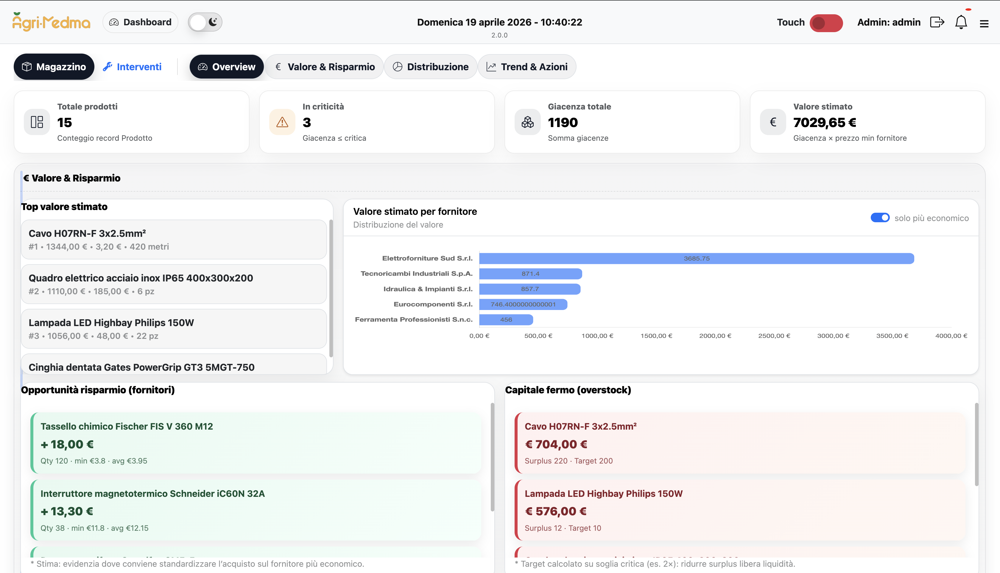
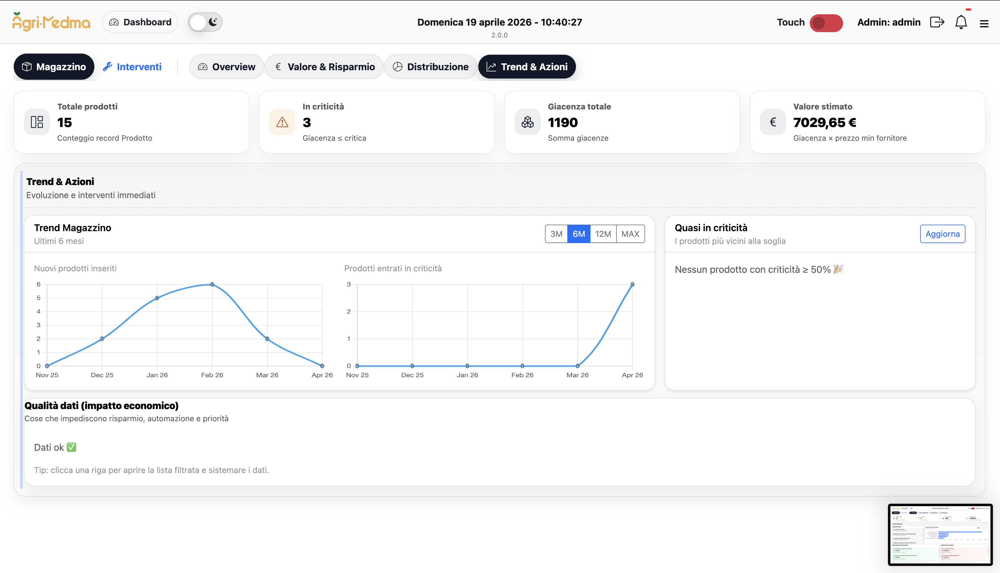
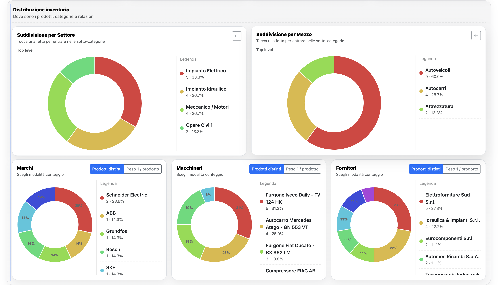
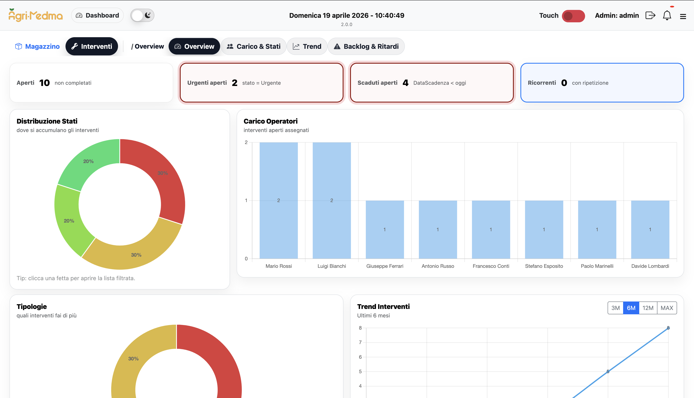
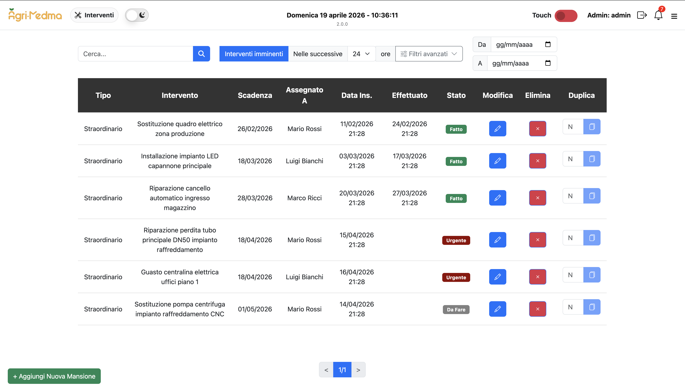
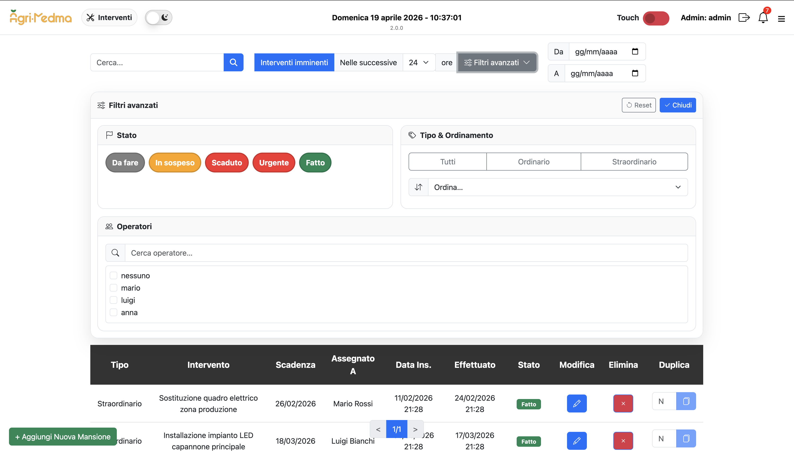
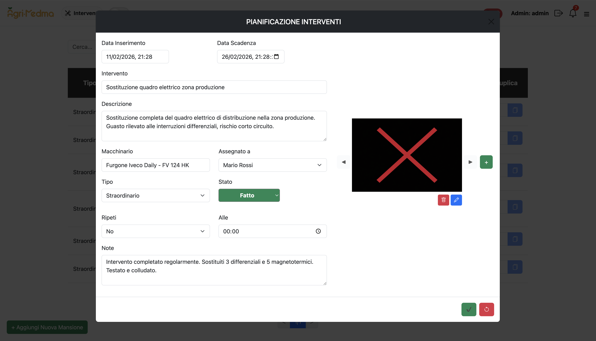
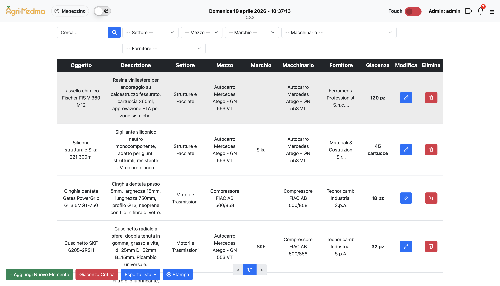
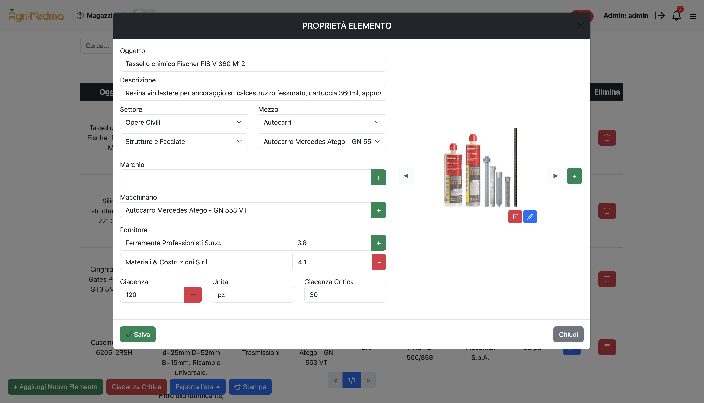
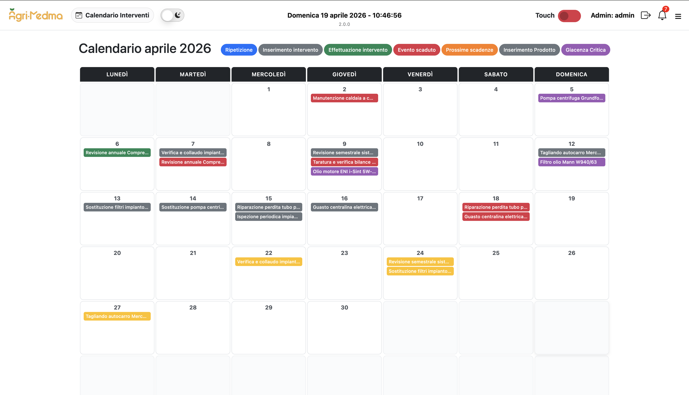
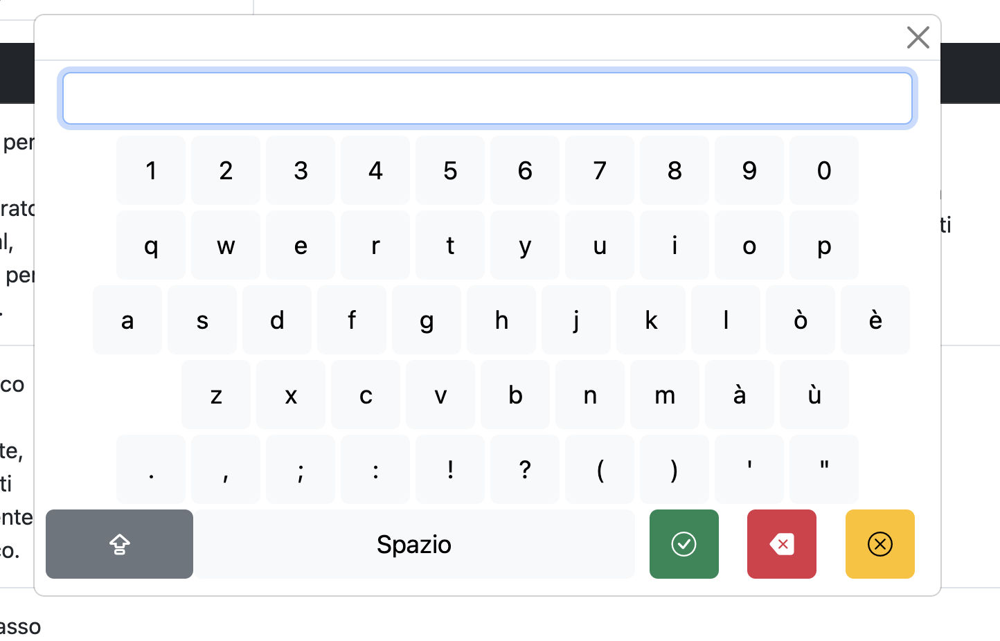
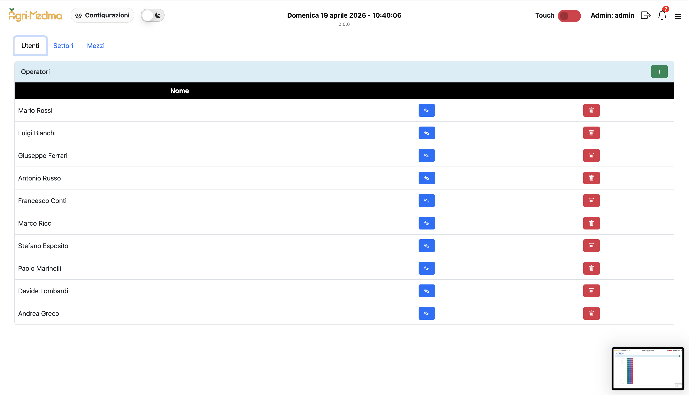
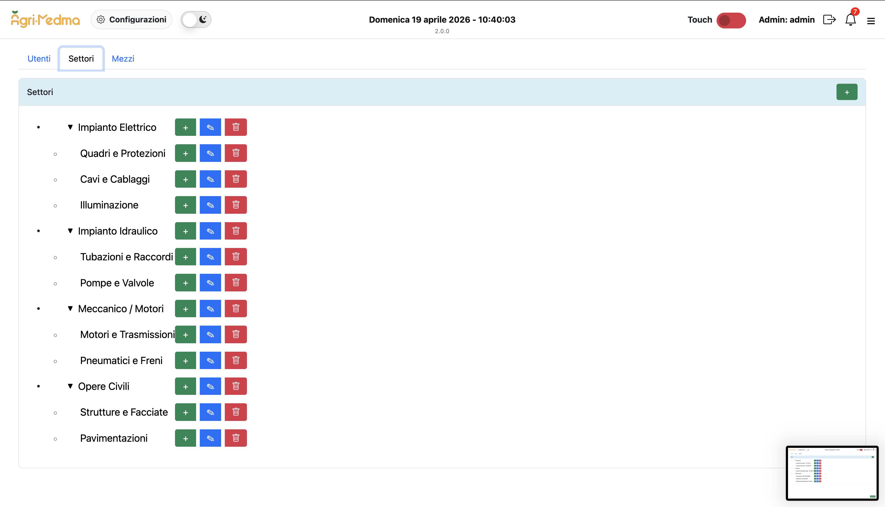
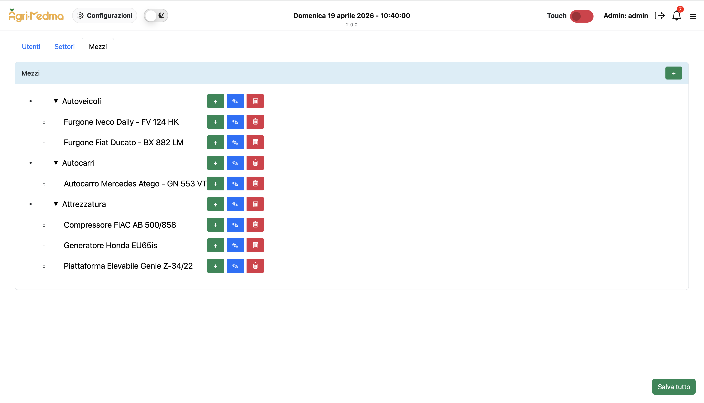
The application follows a strict layered architecture deployed entirely on-premise inside Docker containers. Every technology choice was driven by the on-premise kiosk constraint and client familiarity requirements.
Hover each node to see the design rationale
The app runs on a kiosk with no internet. Razor Pages serve complete HTML from the server — no CDN, no JS bundle loading issues, no hydration problems. Simpler mental model for a CRUD-heavy workflow. The only JS needed is the virtual keyboard for touch input.
ASP.NET Identity brings email verification, password resets, and claim tables — all useless for warehouse operators who are assigned by an admin. Custom cookie auth with SHA256 + timing-safe comparison gives full control in ~100 lines of code.
The client has limited IT expertise. Docker means the entire stack — ASP.NET Core app + SQL Server 2022 — deploys with docker compose up. No manual SQL Server installation. Works identically on Windows or Linux. Health checks ensure the DB is ready before the app starts.
Pages call services, services return DTOs — never EF entities directly. This means the UI is decoupled from the database schema. Adding a computed property (like "next occurrence for recurring task") happens in the service, not scattered across page handlers.
The nightly job marks hundreds of overdue tasks as expired. Loading each entity through EF Core, checking the condition, and saving back would generate N round-trips. A single bulk UPDATE does it in one query, with no ORM overhead.
Categories needed unlimited depth for future growth. A self-referencing table avoids separate tables per category level. Descendant traversal is done in-memory after loading the full tree once — avoids recursive SQL CTEs that are harder to maintain.
Three non-trivial engineering problems encountered during development and how they were resolved.
Tasks could repeat daily, on specific weekdays, or at custom intervals. The "imminent tasks" filter needed to show only tasks due in the next N hours — including the next occurrence of any recurring task — without storing each occurrence in the database.
Recurring tasks are stored as a single parent row with a linked InterventoRipetizione record. At query time, InterventiService calculates the next occurrence in-memory using Italian day-of-week parsing, then applies the imminent window filter before returning paged results.
The inventory category system is a multi-level tree (TaxonomyNode with self-referencing ParentId). Filtering products by a parent category needed to include all descendants, not just direct children — without recursive SQL.
MagazzinoService loads the full taxonomy tree once, then recursively collects all descendant node IDs in-memory. The product query then uses an IN clause against this pre-computed ID set. This avoids N+1 and complex recursive CTEs while keeping the query simple.
Products have multiple many-to-many relationships (brands, suppliers, machinery, images). Loading all of them in a single EF Core query with .Include() produced cartesian explosions — the same product row multiplied across all related rows, breaking pagination count.
Adopted a 2-step query pattern: first fetch the paginated product IDs (simple, fast), then load the full object graph for only those IDs in a second query. This eliminates cartesian explosion and keeps pagination accurate while still loading all related data.
The application runs entirely on the client's local machine with no cloud dependency. A Docker Compose stack manages both the ASP.NET Core web app and SQL Server 2022, with health checks ensuring the database is ready before the app starts.
Shipped and deployed to a real warehouse client — from first requirement meeting to running on a touch-screen kiosk on the factory floor.
Feedback received after delivery — from initial requirements gathering to running in production on the warehouse floor.
Ho avuto il piacere di collaborare con Marco per lo sviluppo di un software gestionale dedicato alla mia azienda e il risultato ha superato le aspettative. Marco non solo ha realizzato il prodotto rispettando al millimetro tutte le caratteristiche e le funzionalità che gli avevo richiesto, ma ha anche dimostrato una disponibilità eccezionale. Ha accolto ogni richiesta di confronto con prontezza e professionalità, rendendo l'intero processo fluido e senza stress. Lo raccomando caldamente a chiunque cerchi uno sviluppatore affidabile, competente e orientato alle soluzioni.
Whether it's a similar industrial solution or something completely different — let's talk.